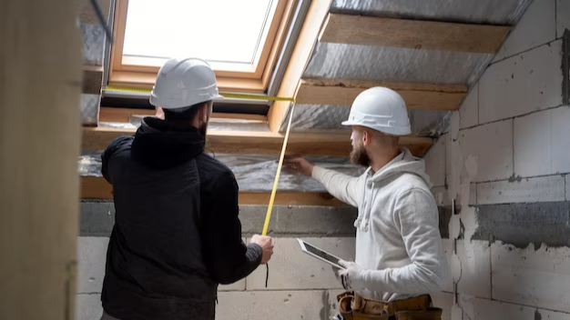
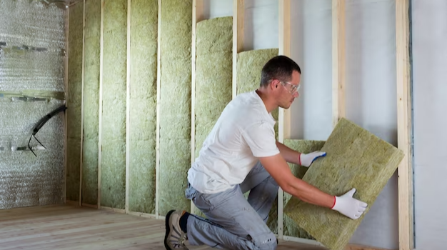

Insulation is an essential component of any building, whether it is a residential or commercial property. It can help regulate the temperature and reduce noise levels, making for a comfortable and energy-efficient environment. However, with the wide range of insulation types available in the market, it can be challenging to determine which one is most suitable for your property. In this blog post, we will be discussing the various types of wall insulation available, their characteristics, and their benefits.
Firstly, we will be exploring the most common type of insulation, fiberglass insulation. It is made up of fine glass fibers and is available in batts, rolls, and loose-fill form. Next, we will be discussing cellulose insulation, which is made from recycled materials such as newspapers and cardboard. We will also be looking at spray foam insulation, which is known for its superior air-sealing properties. Additionally, we will be examining rigid foam insulation, which is frequently used in commercial properties due to its high R-value and durability. Lastly

The lowest thermal resistance or R-value of insulation will depend primarily on how well it's installed. homeowners can install certain kinds of insulation, such as
A widespread and easily accessible insulation type are batts or rolls. It consists of bendable fibers such as fiberglass. You can choose from batts and rolls constructed from mineral (rock and slag) wool, plastic fibers, and natural fibers, such as cotton and sheep's wool.
Concrete blocks are used in the construction of home foundations and walls. If they aren't filled with steel and concrete for structural reasons, they can be full of insulation, increasing their home's wall R-value. Computer studies and field studies have proven that balloon-style insulation has virtually no heat loss heating, because heat can flow through the solid regions of walls.
Foam boards -- rigid panels of insulation -- are capable of insulating almost any part of your residence, from the roof to the foundation. They are especially good at insulating exterior surfaces, interior surfaces, and attic hatches.
A typical wall assembly has poured concrete forms, or ICFs, which extend the life of the wall assembly after its construction. Concrete walls treated with these forms have a high thermal resistance; typically, they are about R-20. ICF residences are constructed from concrete, but they are traditional buildings.
Loose-fill insulation is characterized by particles of coconut shell, foam, or other materials. These small materials form an insulation material that can fit into any space without disrupting structures or finishes.
The most common materials used to produce loose-fill insulation include cellulose, fiberglass, and mineral (rock or slag) wool. All of these materials are produced using recycled materials.

Compared to most traditional insulation systems, radiant barriers reflect radiant heat instead of resisting conductive and convective heat flow. Radiant barriers are installed in places like attics to reduce summer heat gains and the subsequent cooling costs.
As a rule, ceramic board insulation comprises either fiberglass or mineral wool and is primarily used for insulating ducts and heat ducts in residential and commercial buildings. It is also used when a product can withstand high temperatures. These products are available in various thicknesses from 1 to 2.5 inches.
Liquid (pourable) foam insulation materials can be sprayed, poured, foamed in place, or injected. Foamed-in place insulation can be blown into walls, on attic surfaces, or under floors to insulate and reduce air leakage.The greater the R-value for an Insulation System, the better it is at blocking air leakage into tiny crevices.
In the end, choosing the right type of insulation for your home is critical to ensuring that your living space remains comfortable and energy-efficient. The four types of insulation discussed in this post - fiberglass, cellulose, spray foam, and rigid foam - each have their unique benefits and drawbacks. It's important to consider factors such as R-value, cost, and installation requirements when deciding on the best option for your needs. Regardless of which type of insulation you choose, it's essential to properly install and maintain it in order to maximize its effectiveness and ensure long-term energy savings.